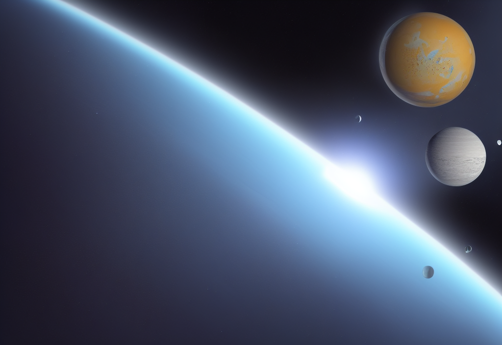

What are the impacts of this dynamic space system on humanity?.
What are the impacts of this dynamic space system on humanity? Harsh space weather radiation can pose risks for astronauts. NASA heliophysics employs a diverse fleet of spacecraft to observe these systems.
Advanced Composition Explorer (ACE): The ACE satellite is a collaborative effort between NASA and the U.S. Air Force. It was launched in 1997 and is designed to study the composition and dynamics of the solar wind. ACE makes measurements of the solar wind and the magnetic fields throughout the solar system and is the first satellite to provide real-time data on space weather conditions.
NOAA's Deep Space Climate Observatory (DSCOVR): DSCOVR was launched in 2015 and is designed to study the solar wind and its effects on Earth's magnetosphere. DSCOVR also has a camera that takes images of the sunlit side of Earth every day. These images are used to create the ""Blue Marble"" image that has become an iconic representation of our home planet.

Solar Dynamics Observatory (SDO): SDO is a NASA mission that launched in 2010. It is designed to study the sun's magnetic field and how it affects the solar wind. SDO makes high-resolution images of the sun and measures the sun's ultraviolet emissions.
Solar and Terrestrial Relations Observatory (STEREO): STEREO is a NASA mission that launched in 2006. It consists of two spacecraft that make simultaneous measurements of the sun and the solar wind. STEREO has helped scientists to understand how solar eruptions interact with Earth's magnetosphere. Solar and Heliospheric Observatory (SOHO): SOHO is a joint ESA/NASA mission that launched in 1995. It is designed to study the sun's interior and the solar wind.
SOHO has made many discoveries, including the identification of more than 3,000 comets. Van Allen Probes: The Van Allen Probes are a pair of NASA spacecraft that were launched in 2012. They are designed to study the Earth's radiation belts. The Van Allen Probes have made many discoveries, including the identification of a new type of radiation belt around Earth."